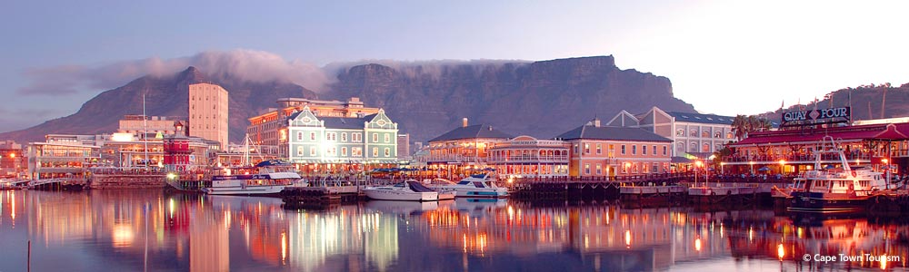

V&A Waterfront, Western Cape
Published: 07/01/2023 The Victoria and Alfred Waterfront, set in the oldest working harbour in the Southern Hemisphere, is considered the most visited tourist attraction in South Africa. Each year the V&A Waterfront attracts 24 million visitors.
Learn more...